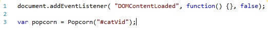
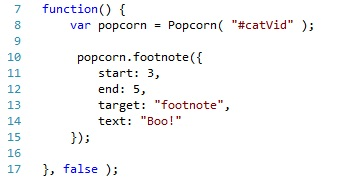
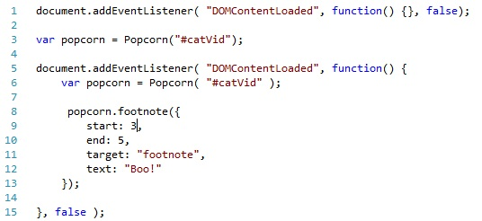

The document.addEventListener() method is used to add an event handler to the document. We will use this method to create an event handler in our JavaScript file to execute the code inside the method when the document has finished loading
The document.addEventListener() method takes the form:
document.addEventListener
(event, fuction, useCapture)
Parameters:
If you are interested in knowing more about this method go here.
At this point, your JavaScript file should look like this:

We are now ready to move on to writing the function to add text to the page.
Footnote is a plugin for popcorn that adds a text element to the page. This plugin will be used to add text to the page and synchronize this added text with the media element
The footnote plugin takes the form:
[nameOfPopcornInstance].footnote({list of options})
Options
Example: For our example, we want the string "Boo!" to appear in the footnote
div at 3 seconds and disappear at 5 seconds. Inorder to do that, we write the
footnote function like so:

**Note: If you downloaded the wrong version of the popcorn.js file you'll find out now. If you are having trouble getting this function to work, you may have download the version without the plugins
Now, all you have to do is add this function to the document.addEventListener() method in the correct place you are done!
The final product should look like this:
You can check out a demo of this code here